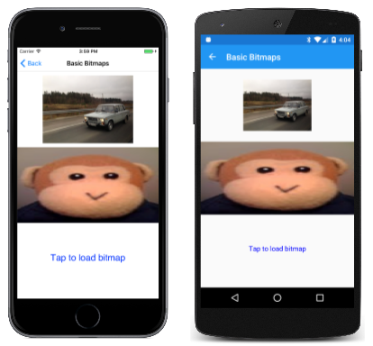

Bitmap Basics in SkiaSharp
Load bitmaps from various sources and display them.
The support of bitmaps in SkiaSharp is quite extensive. This article covers only the basics — how to load bitmaps and how to display them:

A much deeper exploration of bitmaps can be found in the section SkiaSharp Bitmaps.
A SkiaSharp bitmap is an object of type SKBitmap. There are many ways to create a bitmap but this article restricts itself to the SKBitmap.Decode method, which loads the bitmap from a .NET Stream object.
The Basic Bitmaps page in the SkiaSharpFormsDemos program demonstrates how to load bitmaps from three different sources:
- From over the Internet
- From a resource embedded in the executable
- From the user's photo library
Three SKBitmap objects for these three sources are defined as fields in the BasicBitmapsPage class:
public class BasicBitmapsPage : ContentPage
{
SKCanvasView canvasView;
SKBitmap webBitmap;
SKBitmap resourceBitmap;
SKBitmap libraryBitmap;
public BasicBitmapsPage()
{
Title = "Basic Bitmaps";
canvasView = new SKCanvasView();
canvasView.PaintSurface += OnCanvasViewPaintSurface;
Content = canvasView;
...
}
...
}
Loading a Bitmap from the Web
To load a bitmap based on a URL, you can use the HttpClient class. You should instantiate only one instance of HttpClient and reuse it, so store it as a field:
HttpClient httpClient = new HttpClient();
When using HttpClient with iOS and Android applications, you'll want to set project properties as described in the documents on Transport Layer Security (TLS) 1.2.
Because it's most convenient to use the await operator with HttpClient, the code can't be executed in the BasicBitmapsPage constructor. Instead, it's part of the OnAppearing override. The URL here points to an area on the Xamarin web site with some sample bitmaps. A package on the web site allows appending a specification for resizing the bitmap to a particular width:
protected override async void OnAppearing()
{
base.OnAppearing();
// Load web bitmap.
string url = "https://developer.xamarin.com/demo/IMG_3256.JPG?width=480";
try
{
using (Stream stream = await httpClient.GetStreamAsync(url))
using (MemoryStream memStream = new MemoryStream())
{
await stream.CopyToAsync(memStream);
memStream.Seek(0, SeekOrigin.Begin);
webBitmap = SKBitmap.Decode(memStream);
canvasView.InvalidateSurface();
};
}
catch
{
}
}
The Android operating system raises an exception when using the Stream returned from GetStreamAsync in the SKBitmap.Decode method because it's performing a lengthy operation on a main thread. For this reason, the contents of the bitmap file are copied to a MemoryStream object using CopyToAsync.
The static SKBitmap.Decode method is responsible for decoding bitmap files. It works with JPEG, PNG, and GIF bitmap formats, and stores the results in an internal SkiaSharp format. At this point, the SKCanvasView needs to be invalidated to allow the PaintSurface handler to update the display.
Loading a Bitmap Resource
In terms of code, the easiest approach to loading bitmaps is including a bitmap resource directly in your application. The SkiaSharpFormsDemos program includes a folder named Media containing several bitmap files, including one named monkey.png. For bitmaps stored as program resources, you must use the Properties dialog to give the file a Build Action of Embedded Resource!
Each embedded resource has a resource ID that consists of the project name, the folder, and the filename, all connected by periods: SkiaSharpFormsDemos.Media.monkey.png. You can get access to this resource by specifying that resource ID as an argument to the GetManifestResourceStream method of the Assembly class:
string resourceID = "SkiaSharpFormsDemos.Media.monkey.png";
Assembly assembly = GetType().GetTypeInfo().Assembly;
using (Stream stream = assembly.GetManifestResourceStream(resourceID))
{
resourceBitmap = SKBitmap.Decode(stream);
}
This Stream object can be passed directly to the SKBitmap.Decode method.
Loading a Bitmap from the Photo Library
It's also possible for the user to load a photo from the device's picture library. This facility is not provided by Xamarin.Forms itself. The job requires a dependency service, such as the one described in the article Picking a Photo from the Picture Library.
The IPhotoLibrary.cs file in the SkiaSharpFormsDemos project and the three PhotoLibrary.cs files in the platform projects have been adapted from that article. In addition, the Android MainActivity.cs file has been modified as described in the article, and the iOS project has been given permission to access the photo library with two lines towards the bottom of the info.plist file.
The BasicBitmapsPage constructor adds a TapGestureRecognizer to the SKCanvasView to be notified of taps. On receipt of a tap, the Tapped handler gets access to the picture-picker dependency service and calls PickPhotoAsync. If a Stream object is returned, then it is passed to the SKBitmap.Decode method:
// Add tap gesture recognizer
TapGestureRecognizer tapRecognizer = new TapGestureRecognizer();
tapRecognizer.Tapped += async (sender, args) =>
{
// Load bitmap from photo library
IPhotoLibrary photoLibrary = DependencyService.Get<IPhotoLibrary>();
using (Stream stream = await photoLibrary.PickPhotoAsync())
{
if (stream != null)
{
libraryBitmap = SKBitmap.Decode(stream);
canvasView.InvalidateSurface();
}
}
};
canvasView.GestureRecognizers.Add(tapRecognizer);
Notice that the Tapped handler also calls the InvalidateSurface method of the SKCanvasView object. This generates a new call to the PaintSurface handler.
Displaying the Bitmaps
The PaintSurface handler needs to display three bitmaps. The handler assumes that the phone is in portrait mode and divides the canvas vertically into three equal parts.
The first bitmap is displayed with the simplest DrawBitmap method. All you need to specify are the X and Y coordinates where the upper-left corner of the bitmap is to be positioned:
public void DrawBitmap (SKBitmap bitmap, Single x, Single y, SKPaint paint = null)
Although an SKPaint parameter is defined, it has a default value of null and you can ignore it. The pixels of the bitmap are simply transferred to the pixels of the display surface with a one-to-one mapping. You'll see an application for this SKPaint argument in the next section on SkiaSharp Transparency.
A program can obtain the pixel dimensions of a bitmap with the Width and Height properties. These properties allow the program to calculate coordinates to position the bitmap in the center of the upper-third of the canvas:
void OnCanvasViewPaintSurface(object sender, SKPaintSurfaceEventArgs args)
{
SKImageInfo info = args.Info;
SKSurface surface = args.Surface;
SKCanvas canvas = surface.Canvas;
canvas.Clear();
if (webBitmap != null)
{
float x = (info.Width - webBitmap.Width) / 2;
float y = (info.Height / 3 - webBitmap.Height) / 2;
canvas.DrawBitmap(webBitmap, x, y);
}
...
}
The other two bitmaps are displayed with a version of DrawBitmap with an SKRect parameter:
public void DrawBitmap (SKBitmap bitmap, SKRect dest, SKPaint paint = null)
A third version of DrawBitmap has two SKRect arguments for specifying a rectangular subset of the bitmap to display, but that version isn't used in this article.
Here's the code to display the bitmap loaded from an embedded resource bitmap:
void OnCanvasViewPaintSurface(object sender, SKPaintSurfaceEventArgs args)
{
...
if (resourceBitmap != null)
{
canvas.DrawBitmap(resourceBitmap,
new SKRect(0, info.Height / 3, info.Width, 2 * info.Height / 3));
}
...
}
The bitmap is stretched to the dimensions of the rectangle, which is why the monkey is horizontally stretched in these screenshots:
{kind=link}
The third image — which you can only see if you run the program and load a photo from your own picture library — is also displayed within a rectangle, but the rectangle's position and size are adjusted to maintain the bitmap's aspect ratio. This calculation is a little more involved because it requires calculating a scaling factor based on the size of the bitmap and the destination rectangle, and centering the rectangle in that area:
void OnCanvasViewPaintSurface(object sender, SKPaintSurfaceEventArgs args)
{
...
if (libraryBitmap != null)
{
float scale = Math.Min((float)info.Width / libraryBitmap.Width,
info.Height / 3f / libraryBitmap.Height);
float left = (info.Width - scale * libraryBitmap.Width) / 2;
float top = (info.Height / 3 - scale * libraryBitmap.Height) / 2;
float right = left + scale * libraryBitmap.Width;
float bottom = top + scale * libraryBitmap.Height;
SKRect rect = new SKRect(left, top, right, bottom);
rect.Offset(0, 2 * info.Height / 3);
canvas.DrawBitmap(libraryBitmap, rect);
}
else
{
using (SKPaint paint = new SKPaint())
{
paint.Color = SKColors.Blue;
paint.TextAlign = SKTextAlign.Center;
paint.TextSize = 48;
canvas.DrawText("Tap to load bitmap",
info.Width / 2, 5 * info.Height / 6, paint);
}
}
}
If no bitmap has yet been loaded from the picture library, then the else block displays some text to prompt the user to tap the screen.
You can display bitmaps with various degrees of transparency, and the next article on SkiaSharp Transparency describes how.